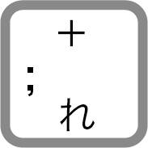
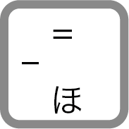
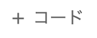
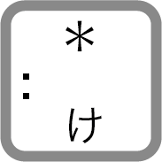
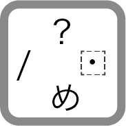
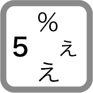

(1) 簡単な計算
CodeセルにPythonの式を入力して、実行する（をクリック）と、その結果の値がセルの下に表示されます。
四則演算に使う +（プラス），-（マイナス），*（アスタリスク）などを演算子といいます。
数字・演算子・括弧はすべて半角で入力をします（全角で入力してしまうと、エラーになります）。
また、演算子の前後は半角スペースを入れるとコードが見やすくなります（半角スペースを入れなくても実行はできます）。
足し算
足し算は + を使います。
+（プラス）は
を押しながらを押します。
次のコードを記入し、を押して実行しましょう（警告が出た場合は、そのまま実行をクリックします）。
123 + 456579引き算
引き算は -を使います。
-（マイナス）は、を押します。
Colaboratoryノートブック左上の  を押して、新規追加したコードセルに次のコードを記入し、を押して実行しましょう。
789 - 123666かけ算
かけ算は * （アスタリスク）を使います。
* はを押しながらを押します。
456 * 789359784割り算（除算）
実数の割り算は /（スラッシュ）を使います。
/は、を押します。
123 / 524.6ただし、0(ゼロ)で割ろうとすると次のようにエラー（ZeroDivisionError）となります。
123 / 0
---------------------------------------------------------------------------
ZeroDivisionError Traceback (most recent call last)
<ipython-input-44-76e1a9ab9410> in <cell line: 1>()
----> 1 123 / 0
ZeroDivisionError: division by zero
エラーの詳細はZeroDivisionErrorを参照してください。
割り算（整数除算）
整数の割り算の商を求めるときは //（二重スラッシュ）を用います。
このような割り算を整数除算といいます。
123 // 524余り（整数除算の剰余）
整数の割り算の余りを求めるときは %（パーセント）を用います。
%は、を押しながらを押します。
123 % 53累乗
累乗は **（二重アスタリスク）を用います。
2 ** 101024算術演算子まとめ
| 計算 | 演算子 | 例 | 結果 |
|---|---|---|---|
| 足し算（加算） | + | 3 + 5 | 8 |
| 引き算（減算） | - | 5 - 3 | 2 |
| かけ算（乗算） | * | 2 * 3 | 6 |
| 実数の割り算（実数除算） | / | 10 / 3 | 3.3333… |
| 10 / 5 | 2.0 | ||
| 整数の割り算（整数除算） | // | 10 // 3 | 3 |
| 10 // 5 | 2 | ||
| 割り算の余り | % | 10 % 3 | 1 |
| 累乗 | ** | 2 ** 3 | 8 |